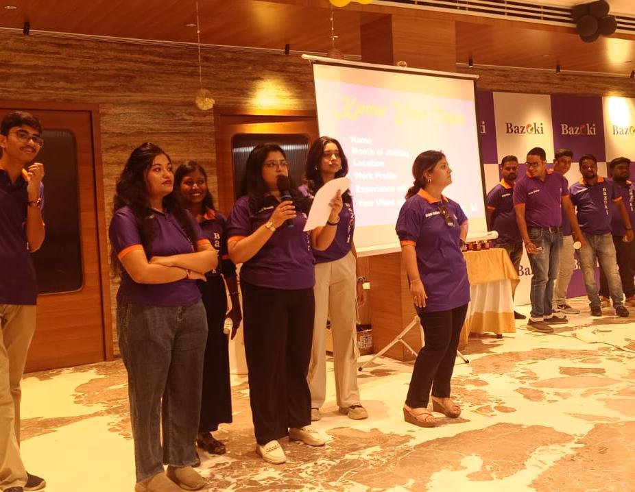
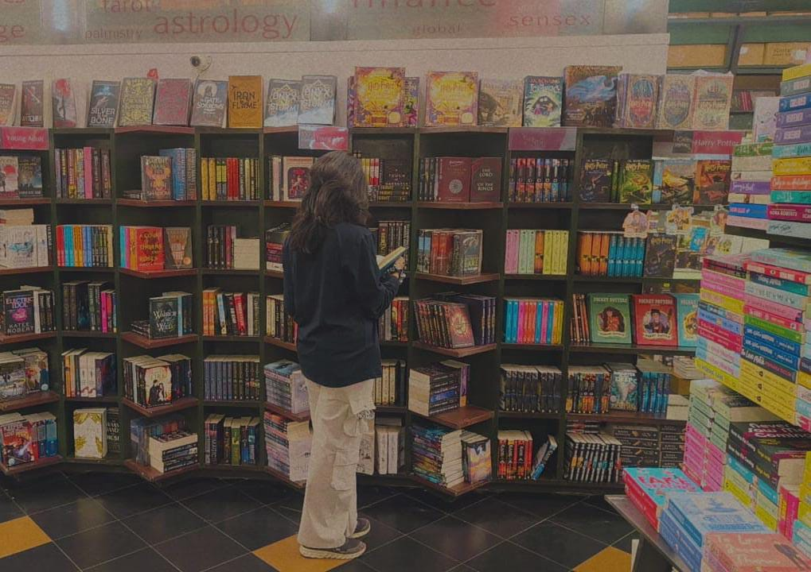

Turning raw data into stories, visuals, and strategies. Currently deepening my expertise in Python, Excel, Power BI, SQL, Looker Studio, Apps Script, and AI platforms such as Codex, Antigravity, AI Studio, Gemini, Claude AI, and more, while building real-world projects that merge logic with creativity. Armed with a love for languages (human and programming), and a drive to explore beyond textbooks, I’m on a journey to turn curiosity into career. Seeking opportunities to gain practical experience and deepen my understanding of real-world data challenges.
View ResumeI'm Anandita, a B.Sc. Data Science student at Techno India University — but there’s more to me than just datasets and dashboards!

This HR analytics dashboard built in Power BI, is aimed at understanding workforce dynamics and enhancing employee satisfaction.
View on GitHubThis Python project explores and analyzes Netflix’s content dataset that help understand how Netflix’s library has evolved over time.
View on GitHubThis responsive Netflix Clone built using HTML, CSS and Javascript, showcases interactive UI elements and modern layout techniques.
View on GitHubA live analytics dashboard for Bazoki that turns business data into quick insights, charts, comparison tables, and marketing snapshots.
View SiteCertification in Python and Machine Learning from Devtown, Google Developer Students Club.
Completion of a course on Statistics and Mathematics tailored for Data Science from Udemy.
Completion certificate for data science internship at Pinnacles Lab.
Completion certificate for data analytics job simulation at Deloitte.
Certificate of completion for MS Excel Using AI Workshop from Office Master.
Thank you for being here. In a world full of distractions and endless scrolling, the fact that you've taken a moment to stop by means more than you know. Your presence is truly appreciated.
Every click, every view, every second spent here is a silent gesture of connection — and for that, I am grateful. Whether you're here out of curiosity, support, or simply passing through, know that your time matters. It's a reminder that even in the vastness of the digital world, we can still find moments of meaning and shared humanity.
So thank you — for reading, for caring, and for being part of this journey. May your day be filled with purpose, kindness, and the quiet joy of small, meaningful moments.
Have a great day<3